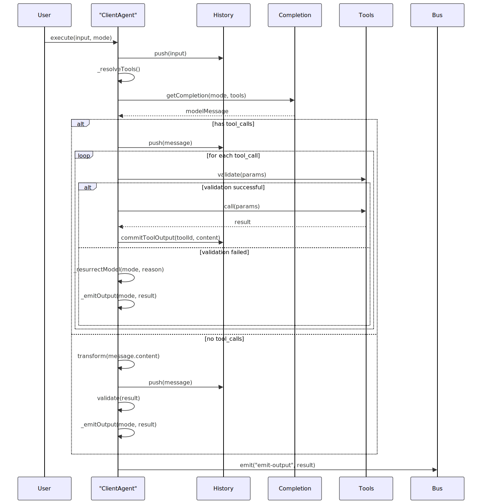
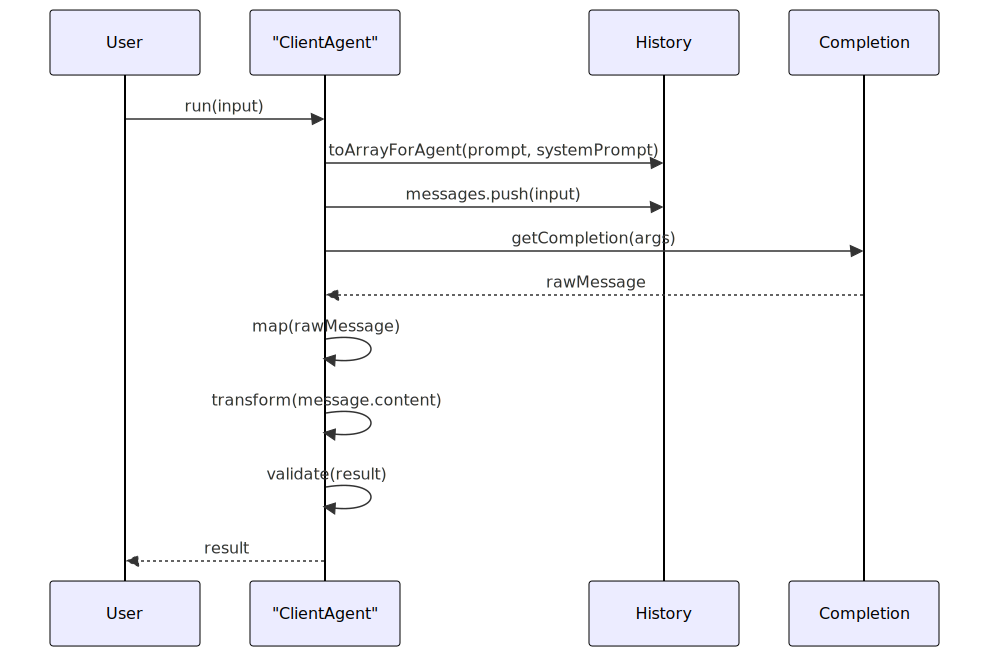
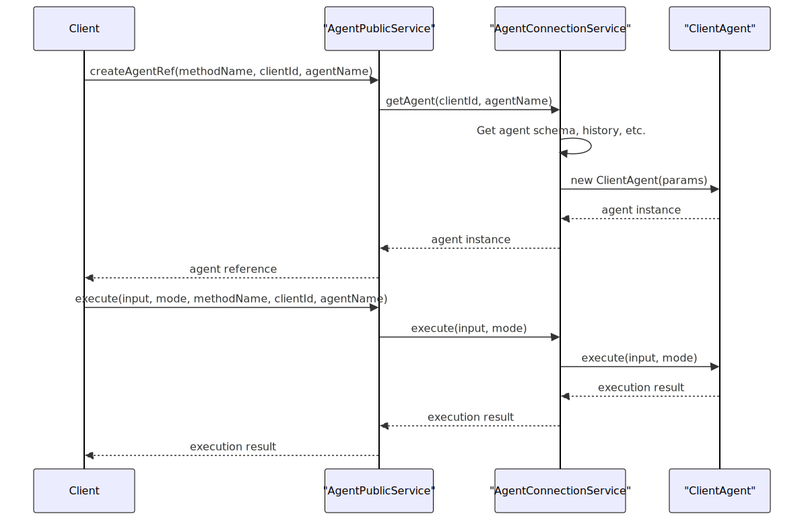

The Client Agent is the fundamental building block in the agent-swarm-kit library, providing the core implementation of the agent interface. It handles message execution, tool calls, model completions, history management, and output emission. This document covers the implementation details, architecture, and functionality of the ClientAgent class. For information about coordinating multiple agents, see Swarm Management.
The ClientAgent class implements the IAgent interface, providing the essential functionality for agent interactions within the swarm system. It serves as a bridge between user inputs, language models, and tools, managing the flow of messages and tool executions.

When initializing a ClientAgent, it requires an instance of IAgentParams which configures its behavior, including:

The execution flow in ClientAgent is its core functionality. The execute method processes input, gets model completions, executes tools if needed, and emits output.

ClientAgent's ability to execute tools is a key feature. It extracts tool calls from model completions, validates them, executes them, and handles their results.
The ClientAgent includes a ToolAbortController class for managing tool execution cancellation:

ClientAgent includes robust error handling, particularly for tool execution failures. It uses various strategies to recover from errors:

ClientAgent integrates with the Model Context Protocol (MCP) system, allowing agents to interact with external tools in various programming languages. MCP tools are mapped to agent tools via the mapMcpToolCall function.

The run method provides stateless execution, which is useful for one-off computations without affecting history or triggering tool executions.

ClientAgent integrates with several other components in the agent-swarm-kit architecture:

ClientAgent manages its lifecycle through various methods:
The ClientAgent is created and managed by the AgentConnectionService, which is exposed via the AgentPublicService. These services provide a clean API for working with agents:

ClientAgent uses a Subject-based event system for handling asynchronous operations and communication:

The ClientAgent is the core component that handles individual agent functionality in the agent-swarm-kit. It manages:
It provides a robust foundation for building complex agent-based systems, with clean interfaces and powerful capabilities.